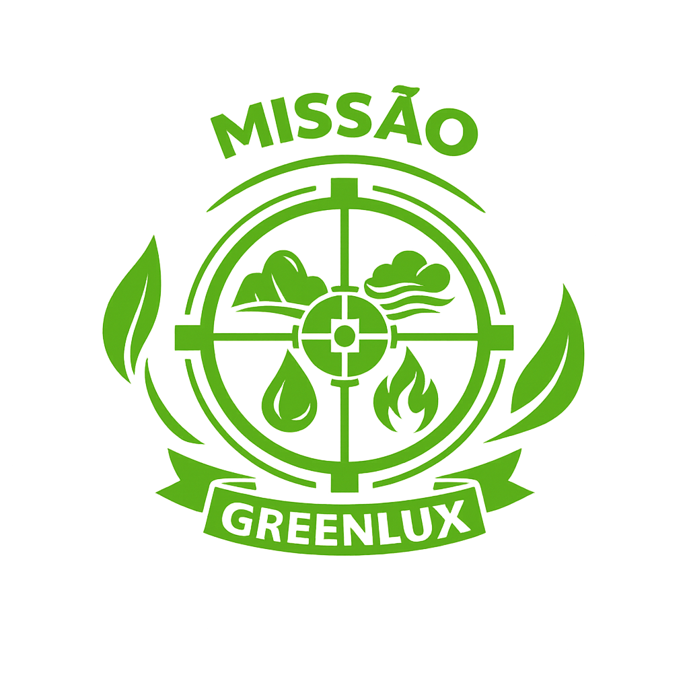
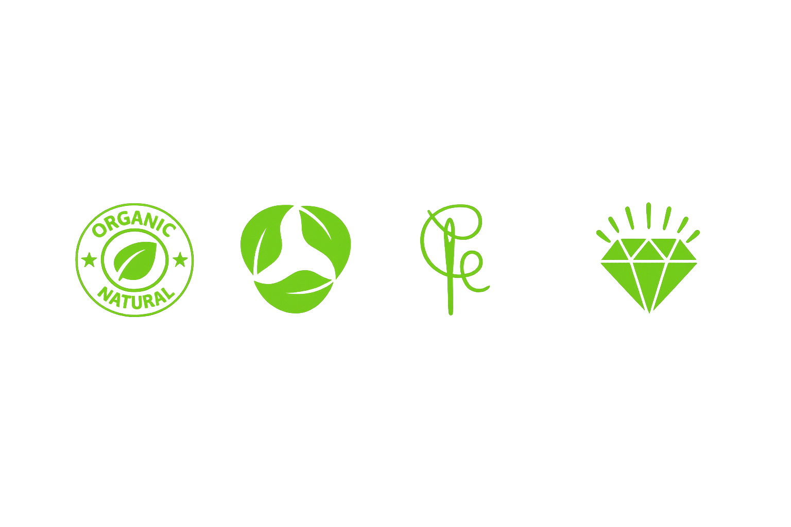

MISSÃO
Greenlux é uma holding de micro marcas sustentáveis, slow fashion e livre de poliéster; todas as marcas têm nano coleções, exclusivas e atemporais de 5 looks, que se renovam a cada dois anos, todas elas sempre disponíveis por encomenda.
Usa os materiais naturais, biodegradáveis, orgânicos, mais nobres da biodiversidade, junto com artesanato patrimonial, num modelo de produção socialmente justo.
O símbolo Greenlux é da cultura Mapuche, que representa as quatro forças da natureza: terra, ar, água e fogo.

